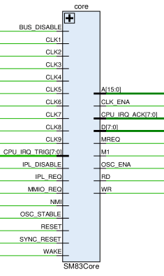

DMG-CPU SM83 Core Connections
Based on: http://iceboy.a-singer.de/doc/dmg_cpu_connections.html

| Signal Name | Direction | From / Where To | Description |
|---|---|---|---|
| BUS_DISABLE | Input | MMIO | Test1 mode enable (disable all internal CPU A/D bus drivers) |
| CLK1+CLK2 | Input | ClkGen | Prechagre Clock, during clk2=0 all buses are precharged where required. Matches about the same phase as clk8+clk9, but most likely the developers made a separate clock to control the timings precisely (moving the phase slightly with delays as required) |
| CLK3+CLK4 | Input | ClkGen | M-cycle Clock (T ÷ 4) |
| CLK5+CLK6 | Input | ClkGen | Last T-cycle (3) of the current M-cycle (@ posedge clk6) |
| CLK7 | Input | ClkGen | Used for Overlap technique when the circuit "completes" something on the 0th T-cycle of the next M-cycle (e.g. used for fetch-execute overlap in SM83 Core) (@ negedge clk7) |
| CLK8+CLK9 | Input | ClkGen | First T-cycle (0) of the current M-cycle (@ posedge clk9) |
| [7:0] CPU_IRQ_TRIG | Input | MMIO | Triggers IRQ. Bits 5-7 connected to GND |
| IPL_DISABLE | Input | MMIO | Test2 mode enable (disable the internal Boot ROM) |
| IPL_REQ | Input | Arb | Arb boot_sel |
| MMIO_REQ | Input | Arb | Arb mmio_sel |
| NMI | Input | From Pad | Directly connected to an input /NMI pad at the top of the die, which is not bonded |
| OSC_STABLE | Input | MMIO | Active-high crystal oscillator stablilized input? After reset, this signal gets high after about 32 milliseconds |
| RESET | Input | From Pad | Active-high asynchronous reset input. Fed directly from /RST input pad |
| SYNC_RESET | Input | ClkGen | Active-high synchronous reset input. Synchronized to CLK8/CLK9 |
| WAKE | Input | APU | Wakes CPU from STOP mode |
| [15:0] A | Output | Global | SoC internal address bus |
| CLK_ENA | Output | MMIO | |
| [7:0] CPU_IRQ_ACK | Output | MMIO | Acknowledges IRQ. Bits 5-7 not connected |
| [7:0] D | Bidir | Global | SoC internal data bus |
| MREQ | Output | Arb, ClkGen | Active-high external memory request |
| M1 | Output | MMIO | The M1 signal is 1 when the next opcode is fetched |
| OSC_ENA | Output | MMIO | Crystal oscillator enable. When CPU drives this low, the crystal oscillator gets disabled to save power. This happens during STOP mode |
| RD | Output | MMIO | Active-high memory RD signal from CPU |
| WR | Output | MMIO | Active-high memory WR signal from CPU |